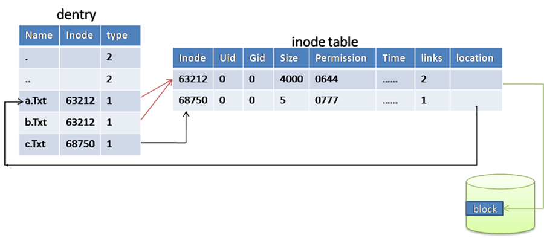
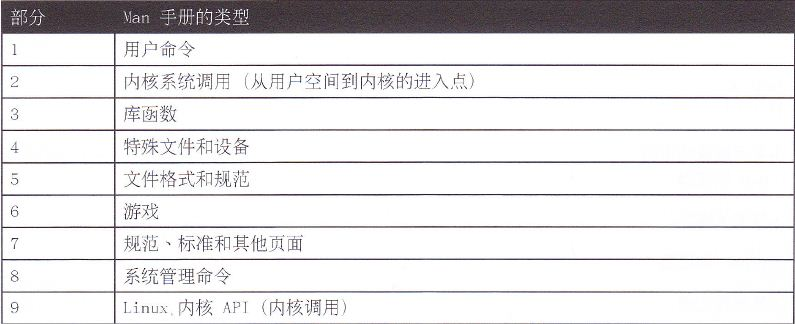

Index
- DNS基本概念
- Master: 正向区/反向区
- Slave: 正向区/反向区
- DNS区域传输限制
- 根提示区、Forward
- Client使用DNS解析
- 扩展： 子域授权
- 扩展： DNS Round Robin
- Puppet简介
- Puppet部署
- 实例：File资源
- 实例：创建模块test1
- 实例：创建模块httpd
- Puppet命名规范
- Puppet资源
- 资源的依赖关系
- notify subscribe
- Puppet部署Nginx
- Puppet部署MySQL
- Master自动签发证书
- Puppet Dashboard
- Puppet Git
- Puppet Cobbler
day1 bash
初识shell:
GNU bash
========================================================
命令解释器，我们可以SHELL实现对Linux系统的管理例如：
1. 文件管理
2. 用户管理
3. 权限管理
4. 磁盘管理
5. 软件管理
6. 网络管理
......
内容提要：
bash shell提示符
shell 语法
bash 特性
Linux获得帮助
基础命令：ls cd pwd clear date whoami echo 通配符 alias unalias 关机/重启命令
ls -l -h -R -a -d -i
file
-
d l p s b c
cd 路径(可以是相对路径也可以是绝对路径)
. .. ~ -
pwd
clear ctrl+l
date date +%F date +%s date -s 日期日间 clock -w
whomai
echo -n
通配符 *代表一个字符串(可以是任何个字符)
?代表一个字符 (可以是任意一个字符)
alias
unalias
命令和文件补齐功能
init 0 关机 halt 关机 shutdown -h now 关机
init 6 重启 reboot 重启 shutdown -r now 重启
什么是文件、什么是目录
inode table inode 编号 硬链接 软件链接 ( ln 命令 )
inode table 存储文件元信息(元数据)

stat filename
创建文件、删除文件 ( touch rm )、{} 的用法
创建目录、删除目录 (mkdir rmdir)
复制文件、复制目录 (cp)
剪切文件、剪切目录、重命名(mv )
远程复制文件、远程复制目录(scp 与 rsync)
历史
history
!行号
!-行号
!string
!!
!$
ctrl+r
快捷键
ctrl+l ctrl+a ctrl+k ctrl+u ctrl+e ctrl+c ctrl+shift++ ctrl+-
Linux下的帮助
一、bash shell提示符：
===================
[root@station230 ~]# date
2012年 10月 24日 星期三 09:38:54 CST
[root@station230 ~]# whoami
root
二、shell 语法
=====================
命令 选项 参数
[root@station230 ~]# date
[root@station230 ~]# date +%F
[root@station230 ~]# date -s 12:30
命令：整条shell命令的主体
选项：会影响会微调命令的行为 //通常以 -, --, +
参数：命令作用的对象
[root@instructor Desktop]# ls
1.png tianyun_ULA03.ctb~ tigervnc-1.1.0-5.el6.x86_64.rpm
2.png tianyun_ULA04.ctb ULE初始化.ctb
3.png tianyun_ULA04.ctb~ video_install.sh
ftp tianyun_ULE_2013_12.ctb
ftp.png tianyun_ULE.ncd
{kind=link}
[root@instructor Desktop]# ls /home/
alice guests instructor lost+found student
[root@instructor Desktop]# ls -a /home/
. .. alice guests instructor lost+found student
==================================================================
小知识：
＊＊＊文件时间
ls -l 文件名 仅看的是文件的修改时间
Linux文件有三种时间：stat 例如：stat anaconda-ks.cfg
访问时间：atime，查看 内容
修改时间：mtime，修改 内容
改变时间：ctime，文件 属性，比如权限
[root@station230 ~]# ls -l install.log
-rw-r--r-- 1 root root 34793 10-23 13:49 install.log
[root@station230 ~]#
[root@station230 ~]# stat install.log
File: “install.log”
Size: 34793 Blocks: 80 IO Block: 4096 一般文件
Device: 802h/2050d Inode: 65282 Links: 1
Access: (0644/-rw-r--r--) Uid: ( 0/ root) Gid: ( 0/ root)
Access: 2012-10-23 16:53:20.000000000 +0800
Modify: 2012-10-23 13:49:46.000000000 +0800
Change: 2012-10-23 13:49:52.000000000 +0800
＊＊＊文件类型：
通过颜色判断文件的类型是错误的！！！
Linux文件是没有扩展名！！！
方法一：
ls -l 文件名 //看第一个字符
- 普通文件（文本文件，二进制，压缩文件，电影，图片。。。）
d 目录文件（蓝色）
b 设备文件（块设备）存储设备硬盘，U盘
c 设备文件（字符设备）打印机，终端/dev/tty1
s 套接字文件
p 管道文件
l 链接文件（淡蓝色）
方法二：file
[root@yangs ~]# file anaconda-ks.cfg
anaconda-ks.cfg: ASCII English text
[root@yangs ~]# file /bin/ls
[root@yangs ~]# file /home
[root@yangs ~]# file /dev/sda
[root@station230 ~]# file /etc/grub.conf
/etc/grub.conf: symbolic link to `../boot/grub/grub.conf'
[root@station230 ~]# file /dev/tty1
/dev/tty1: character special (4/1)
[root@station230 ~]# file /dev/initctl
/dev/initctl: fifo (named pipe)
[root@tianyun ~]# file /dev/log
/dev/log: socket
=================================================================
三、bash特性
1. 命令和文件自动补全<tab> 注意：Tab只能补全命令和文件
# ls /etc/sysconfig/network-scripts/
# ls /etc/sysconfig/network-scripts/ifcfg-eth0
# cat /etc/sysconfig/network-scripts/ifcfg-eth0
# service network restart
# service sshd restart
# date -s 12:30
2. 快捷键
^c 终止前台运行的程序
^d 退出 等价exit
^l 清屏
^a 光标移到命令行的最前端
^e 光标移到命令行的后端
^r 搜索历史命令，利用关键词
Alt+. 引用上一个命令的最后一个参数，等价于!$
3. 历史命令
# history
a. 光标上下键
b. ^r //搜索历史命令(输入一段某条命令的关键字：必须是连续的)
c. !220 //执行历史命令中第220条命令
d. !字符串 //搜索历史命令中最近一个以xxxx字符开头的命令，例如!ser
e. !$ //引用上一个命令的最后一个参数
[root@instructor home]# ls /root /home
[root@instructor home]# cd !$
cd /home
[root@instructor home]# ls /root /home
[root@instructor home]# touch !$/file1
touch /home/file1
4. 别名
# alias //查看系统当前的别名
ll='ls -l --color=tty'
# alias tianyun='ls /etc/sysconfig/network-scripts/' //建立别名
# unalias tianyun //取消tianyun这个别名
grep使用颜色:
方法一：
[root@yangs ~]# grep root /etc/passwd
root:x:0:0:root:/root:/bin/bash
operator:x:11:0:operator:/root:/sbin/nologin
[root@yangs ~]# grep --color root /etc/passwd
root:x:0:0:root:/root:/bin/bash
operator:x:11:0:operator:/root:/sbin/nologin
方法二：定义别名grep
[root@yangs ~]# alias grep='grep --color'
[root@yangs ~]# type -a grep
grep is aliased to `grep --color'
grep is /bin/grep
[root@yangs ~]# grep root /etc/passwd
root:x:0:0:root:/root:/bin/bash
operator:x:11:0:operator:/root:/sbin/nologin
=============================================================
小知识：
bash shell查找命令顺序：
1. 以路径（绝对路径，相对路径）开始命令，例如：/bin/ls 或 cd /bin; ./ls
2. 别名
3. shell内置命令
4. $PATH //环境变量，查看环境变量echo $PATH，例如/bin/ls
# which ls //查看ls命令位置
alias ls='ls --color=tty'
/bin/ls
type -a 命令 //查看命令类型
[root@station230 ~]# type -a ls
ls is aliased to `ls --color=tty'
ls is /bin/ls
==============================================================
Linux获得帮助
1. 命令 --help
# ls --help
用法：ls [选项]... [文件]...
ls 常见选项
-a all,查看目录下的所有文件，包括隐藏文件
-l 长列表显示
-h human 以人性化方式显示出来
-d 只列出目录名，不列出其他内容
-t 按修改时间排序
-r 逆序排列
-i 显示文件的inode号（索引号）
# date --help
Usage: date [OPTION]... [+FORMAT]
or: date [-u|--utc|--universal] [MMDDhhmm[[CC]YY][.ss]]
# date 0214080014
# date 0214080014.00
2. man 手册名，例如man ls
搜索：/-h n N

技巧一：按章节来查找，常用的是1（命令用法），5（文本规范），8（系统管理命令）
/usr/bin/passwd 命令，修改用户密码 man 1 passwd
/etc/passwd 保存用户信息的文件 man 5 passwd
/etc/exports man exports man 5 exports
技巧二：按关键字检索（适合记不住手册的全名时使用）
man ftpd_selinux
man -k "_selinux" //手册名或手册描述中包含关键字_selinux
注：从whatis数据库里找（# makewhatis）
技巧三：在所有章节中查询
# man -a passwd
# man -f passwd
示例：
# man genisoimage
/EXAMPLES
To create a vanilla ISO9660 filesystem image in the file
cd.iso, where the directory cd_dir will become the root
directory if the CD, call:
% genisoimage -o cd.iso cd_dir
[root@instructor ~]# genisoimage -o home.iso /home/
[root@instructor ~]# file home.iso
home.iso: ISO 9660 CD-ROM filesystem data 'CDROM
3. /usr/share/doc
参考文档、配置模块文件
例如：PAM
# ls /usr/share/doc/pam-1.1.1/
# firefox /usr/share/doc/pam-1.1.1/html/Linux-PAM_SAG.html
4. 官方手册
例如：RedHat官方手册
http://docs.redhat.com
5. baidu, google